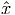
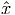
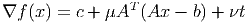
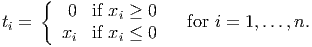
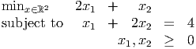

|
| (1) |
- Is the LP feasible?
- Express the LP in an equivalent form min{cT x : Ax = b,x ≥ 0}. Show that if this problem has a finite optimal value then it has an unbounded set of optimal solutions.
- The dual problem is then max{bT y : AT y ≤ c}. Does there exist a feasible dual solution with (AT y) i < ci for some component i?
- What must g, h, and H satisfy for (1) to have a finite optimal value? What can you say about the set of optimal solutions to (1) in this case?
|
| (2) |
has second stage cost
|
| (3) |
Assume all matrices and vectors are dimensioned appropriately. In class, we discussed solving (2) using the L-shaped decomposition method. In class, we only considered the case where the problem has complete recourse, so the second stage problem (3) is feasible for any x feasible in (2).
How can the method be modified if the assumption of complete recourse does not hold? (Assume the dual LP to the subproblem (3) is feasible.)
|
| (4) |
with m = 10 and n = 30. The seed is contained in the data file, so choose a random seed and generate an LP. Note that cj = 1 for all j, and bi = ∑ j=1n(A ij - 1) for all i. We consider the robust LP model
|
| (5) |
where âij = 1 for all i, j, and Γi = 15 for all i = 1,…, 10. Solve (5). In addition to your optimal x and optimal value, submit your seed, and also submit a data file containing A.
Note: You don’t need to use AMPL to solve the robust problem, you’re welcome to use a different LP solver. You will need to run AMPL to generate the data file using the command
This command will display the A matrix, which you could copy and paste into another solver. The run command also generates a data file containing A, which you can email to me: please put your name in the title of the file.
(If you don’t even want to use AMPL to generate the data, ensure you generate an instance in the same way, and submit your A matrix using exactly the formatting indicated in the run file.)
|
| (6) |
where A ∈ ℝm×n and rank(A) = m, and b and c are dimensioned appropriately and c has at least one nonzero component. For any nonnegative scalar parameters μ and ν, we can set up a relaxation of (6):
|
| (7) |
- Show that the optimal value of (7) provides a lower bound for the optimal value of (6).
- Let
 be an optimal solution to (7). Show that cT  < z, the optimal value for (6).
be an optimal solution to (7). Show that cT  < z, the optimal value for (6).
- The function f(x) is convex and differentiable with gradient
 (8) where
 Any minimizer of f(x) must satisfy ∇f(x) = 0. Show that if is a minimizer of f(x) then is infeasible in (6).
- Let satisfy ∇f() = 0. Construct a dual feasible solution y to (6), and hence find a lower bound z(y) on the optimal value of (6).
- Let be a solution to (6). Express z(μ,ν) in terms of cT and z(y) from part 4d.
- Let minimize f(x). We have constructed three lower bounds on the optimal value of 6, namely cT , f(), and z(y). Which one of these is largest?
- Solve 7 for the LP
 for a generic μ > 0, ν > 0. What is the dual solution you obtain using the construction of part 4d? (Hint: the optimal solution has x1 < 0, x2 > 0.)